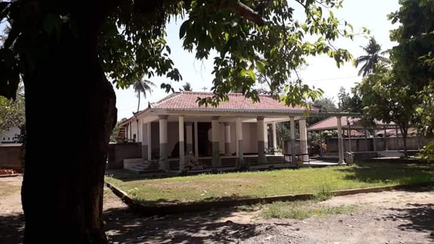
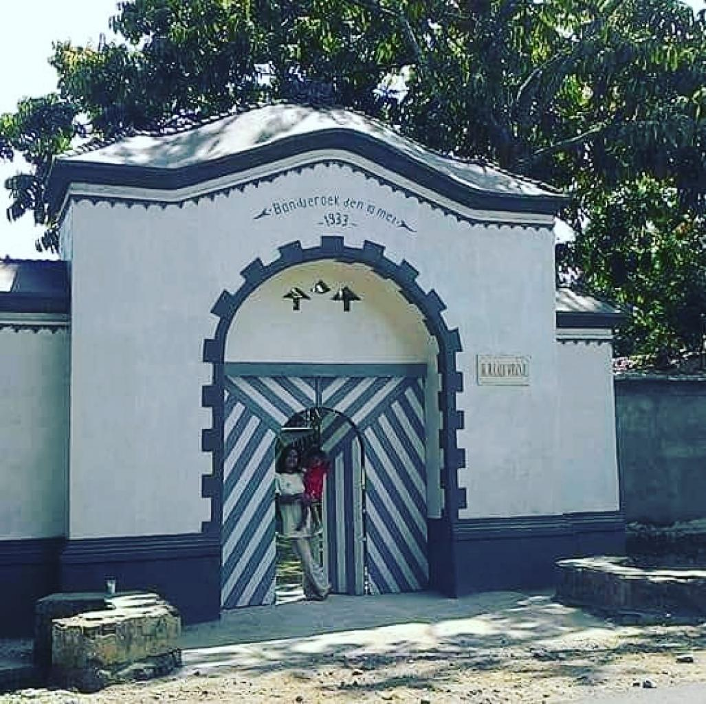
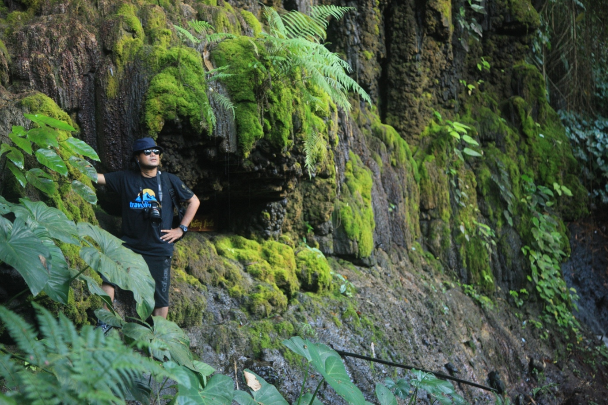
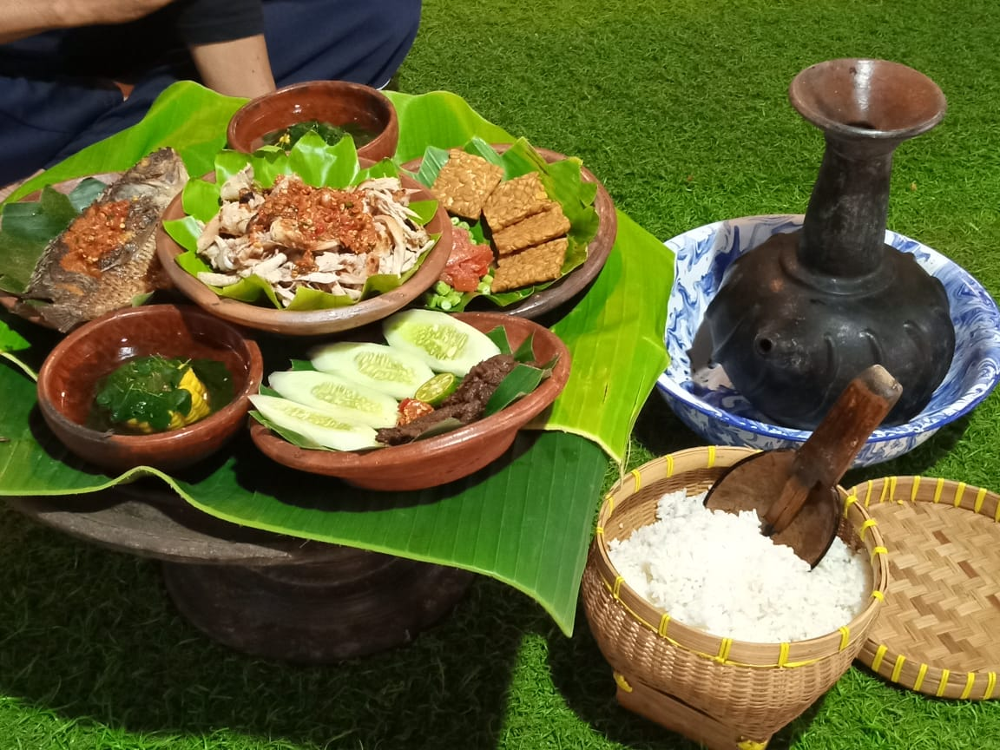

Sejarah

Desa Bonjeruk merupakan desa tertua di wilayah kabupaten Lombok Tenngah, desa ini diperkirakan sudah ada sejak 1886, tetapi konon keberadaannya sudah ada sejak 1852.
Pada era kolonial, tempat ini merupakan pusat pemerintahan distrik Jonggat yang dibuktikan dengan gapura bertuliskan "Bondjeroek Den 10 Mei 1933". Selain itu juga terdapat bangunan ikonik yang tidak kalah menarik, bangunan tersebut adalah Masjid Raden Nune Umas yang telah berdiri sejak 1880-an.
Geografis
Jarak tempuh ke desa Bonjeruk dari Bandara BIZAM hanya 21 kilometer dengan waktu tempuh kurang lebih 30 menit dengn tarif travel kurang lebih Rp. 200.000 - Rp. 250.000 per orang. Sedangkan dari kota Mataram jaraknya mencapai 25 kilometer dan waktu tempuh 46 menit via jalan bypass dengan menggunakan sepeda motor ataupun mobil. Rute yang dilalui dari arah Bandara ke desa Batujai sejauh kurang lebih 2 kilometer sampai menemukan masjid besar Batujai lalu muter dan belok kiri ke arah kota Praya dan lurus kurang lebih 15 menit sampai menemukan pertigaan di Taman Tonjeng Bero lalu belok kiri beberapa meter dan terdapat perempatan Kodim kemudian belok kiri menuju desa Puyung sampai menemukan perempatan lampu merah di pasar Puyung dan belok kanan lurus sampai menemukan Desa Wisata Bonjeruk.
Wisata
Desa Bonjeruk resmi berstatus desa wisata berbasis lingkungan dn budaya setelah diresmikan oleh Wakil Gubernur NTB, Hj. Siti Rohmi Djalilah, pada hari selasa,26 November 2019. WIsata unggulan desa Bonjeruk adalah dari kuliner, wisata, dan adat budaya.
Gedeng Beleq

Gedeng Beleq ini merupakan salah satu peninggalan sejarah pada masa kolonial Hindia-Belanda, bentuknya seperti perumahan pada zamannya. Digerbang atau di depan bangunan ini ada sebuah gapura yang bertuliskn "Bondjeroek Den 10 Mei 1933". Gapura tersebut Merupakan gerbang masuk ke perumahan peninggalan Belanda, perumahan ini juga menjadi pusat lokasi pemerintahan tingkat distrik Jonggat yang di pimpin oleh Lalu Serinata.
Tebing Purba

Saat berkunjung ke desa ini, disana akan ditawarkan melihat tebing purba, yakni bebatuan yang tersusun rapi dan disebut-sebut sudah berusia 100 tahun. Tebing purba memiliki dua lapisan batu cantik dan indah, cocok untuk swafoto ditambah dengan gemericik air terjun yang mempesona dibelakangnya. Selengkapnya
Kuliner

Ada beragam kuliner unik dan lezat yang bisa wisatawan temukan di desa Bonjeruk ini, salah satunya Ayam Merangkat. Olahan tradisional yang berbahan dasar ayam ini bisa dijumpai di pasar bambu dengan suasana pohon bambu yang adem, nyaman, asri, dan khas pedesaan. Cocok untuk nostalgia, selengkapnya...